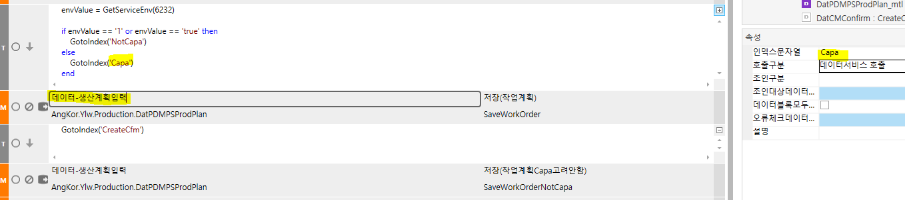
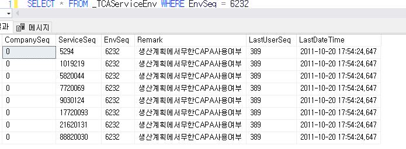

비즈니스에서 데이터서비스 분기 GetServiceEnv
envValue = GetServiceEnv(6232)
if envValue == '1' or envValue == 'true' then
GotoIndex('NotCapa')
else
GotoIndex('Capa')
end

비즈니스 새로 추가할 때는 db에서 넣어줘야함
SELECT * FROM _TCAService WHERE ServiceSeq = 79920153
SELECT * FROM _TCAServiceEnv \<= 테이블에 넣어줘야함

begin tran
insert into _TCAServiceEnv values(
'0','79920153','6232','생산계획에서무한CAPA사용여부','1',getdate()
)
SELECT * FROM _TCAServiceEnv WHERE EnvSeq = 6232
rollback tran